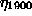

Next: Conclusions: Testing a Hypothesis
Up: Questions of interpretation
Previous: Non-dynamic nonlinearity
It is quite common in bio-medical time series (and elsewhere) that otherwise
harmless looking data once in a while are interrupted by a singular event, for
example a spike. It is now debatable whether such spikes can be generated by a
linear process by nonlinear rescaling. We do not want to enter such a
discussion here but merely state that a time series that covers only one or a
few such events is not suitable for the statistical study of the spike
generation process. The best working assumption is that the spike comes in by
some external process, thus rendering the time series non-stationary. In any
case, the null hypotheses we are usually testing against are not likely to
generate such singular events autonomously. Thus, typically, a series with a
single spike will be found to violate the null hypothesis, but, arguably, the
cause is non-stationarity rather than non-linearity. Let us discuss as a simple
example the same AR(2) process considered previously, this time without any
rescaling. Only at a single instant, n=1900, the system is kicked by a large
impulse instead of the Gaussian variate . This impulse leads to
the formation of a rather large spike. Such a sequence is shown in
Fig. 23. Note that due to the correlations in the process, the
spike covers more than a single measurement.
When we generate surrogate data, the first observation we make is that it takes
the algorithm more than 400 iterations in order to converge to a reasonable
tradeoff between the correct spectrum and the required distribution of
points. Nevertheless, the accuracy is quite good -- the spectrum is correct
within 0.1% of the rms amplitude. Visual inspection of the lower panel of
Fig. 23 shows that the spectral content -- and the assumed values
-- during the single spike are represented in the surrogates by a large number
of shorter spikes. The surrogates cannot know of an external kick. The visual
result can be confirmed by a statistical test with several surrogates, equally
well (99% significance) by a time asymmetry statistic or a nonlinear
prediction error.
If non-stationarity is known to be present, it is necessary to include it in
the null hypothesis explicitly. This is in general very difficult but can be
undertaken in some well behaved cases. In Sec. 6.1 we discussed
the simplest situation of a slow drift in the calibration of the data. It has
been shown empirically [52] that a slow drift in system parameters is
not as harmful as expected [53]. It is possible to generate
surrogates for sliding windows and restrict the discriminating statistics to
exclude the points at the window boundaries. It is quite obvious that special
care has to be taken in such an analysis.
Next: Conclusions: Testing a Hypothesis
Up: Questions of interpretation
Previous: Non-dynamic nonlinearity
Thomas Schreiber
Mon Aug 30 17:31:48 CEST 1999